Introduction
MBA 523: Information Resources Management and Analytics
Me

Why Econ?
My Big Plan
I love thinking about complex social science data problems, telling stories with data, making data informed decisions…but I also love playing with my kids and being outside.
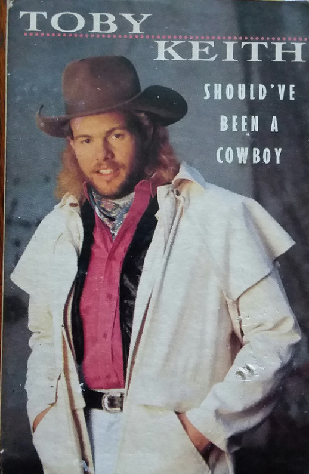
You: Data Science Experience Survey
This Course
This course is mostly management level training
- Understand the landscape so you can lead expeditions
- (Introductory) Hands-on training to give you a sense of what’s going on under the hood
Training for the Future
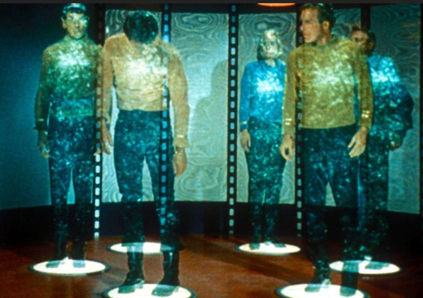 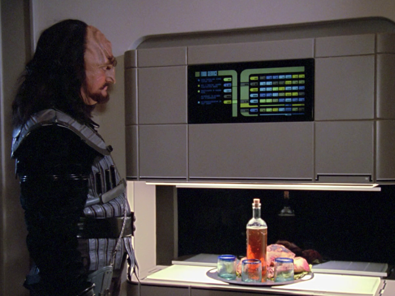

Apple Orchards
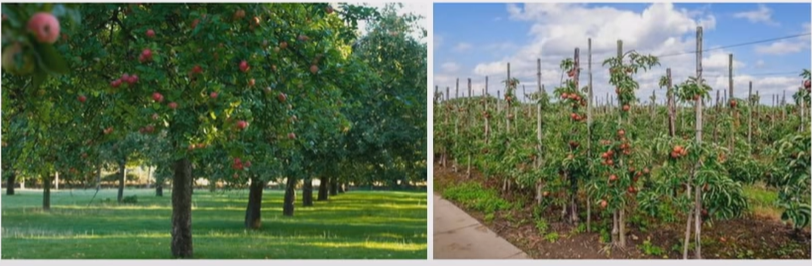- Robots to pick apples?
- Or data driven approach to make it easier for humans?
Duplicate what the Human does or Complete the Task?
Robot to unload dishwasher and put dishes in cupboard
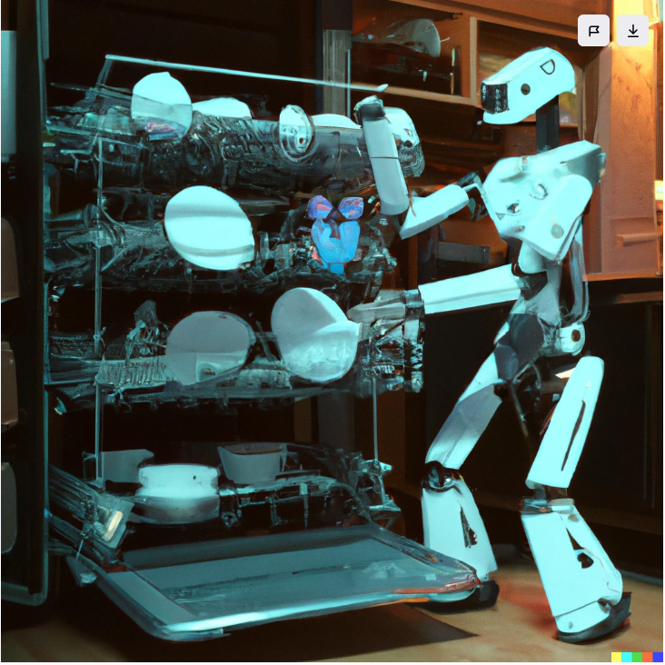
OR: Cupboard that washes dishes?
Which Type of Problem Should we Spend Time On?
The Future that’s Right in Front of us
- Becoming bilingual
[Health care | education | policy | whatever]
and data science
- Seeing the real future through the hype
- Preparing for it and shaping it
Examples…
But first…
Course Admin
Assignments (all on Canvas)
Reading Quiz for Each Lecture
Simulations: Business Analytics, Cyber Attack (TBD)
Prediction Challenge (Week 3)
AI Project (group)
Descriptive Analysis (Week 2)
Data Visualization (Week 4)
Final Product Presentation (Week 5)
Emerging Technology Idea (group) (Week 5)
Peer Evaluation
AI Project
- Very flexible
- Find something interesting in the AI/Data Science/ML world and create something
- Insight: does this answer an important question or solve an important problem?
- Utility: is this useful? Could it be?
- Creativity: could ChatGPT come up with this?
- Novel data: is this a boring dataset or an exciting one? (at least 2k obs)
- One approach: imagine a client has hired you to solve a problem, and this is your chance to solve it
- GROUPS OF 4-5 MUST BE REGISTERED ALONG WITH GENERAL TOPIC AREA HERE BY END OF WEEK 1
Descriptive Analysis
Submissions (1 page) Due end of Week 2
- What data are you using?
- Summary tables + histograms
- Demonstrate that you have the data and your project is feasible
Data Visualization
Submissions (dashboard) Due End of Week 4
- r/dataisbeautiful
- Deep dive into data and specific project
- The relationships that you assumed were present are indeed present
- This the setup of your final project
Final Product Presentation
Presentations (5-7 slides + demo) Due Final Class Meeting
- Convey your solution/answer
- Show why this is interesting
- Demonstrate your data analytics/visualization skills
Questions on AI Group Project?
Prediction Challenge
Submissions (\(\hat{y}\) as .csv) Due End of Week 3
More details coming next week
- Kaggle style
- I provide Training Data \((X, y)\) and Testing \(X\), you submit predictions \((\hat{y})\)
Emerging Technology Summary
Presentations (5-7 slides) Presented Week 5
As a team, investigate an emerging technology/AI application of your interest. You can refer to Gartner Hype Cycle for Emerging Technology and AI for the selection of the topic. Conduct thorough research of this technology using reputable online sources (contact the Bryant librarians on locating good online sources). Work together to create a ~20-minute presentation to report your findings.
Tentative Course Schedule
- *Classes 7/11, 7/13, 7/18, 7/20 will be REMOTE - Zoom link provided through Canvas
| Week | Class | Date | Topic/Reading | Assignments |
|---|---|---|---|---|
| 0 | 1 | 7/6 | Introduction BA Chapter 1 Introduction to Business Analytics |
|
| 1 | 2 | 7/11* | Basic Stats Review AI Chapter 1-2: The Age of AI; Rethinking the Firm BA Chapter 2-3 Describing the Distribution of a Variables; Finding Relationships among Variables |
|
| 3 | 7/13* | Business Intelligence Tools AI Chapter 3-4 the AI Factory; Re-architecting the Firm BA Chapter 4 Business Intelligence (BI) Tools for Data Analysis |
||
| 2 | 4 | 7/18* | PowerBI Guest Lecture |
|
| 5 | 7/20* | Regression + Prediction BA Chapter 10 Estimating Relationships BA Chapter 11 Regression Analysis: Statistical Inference |
Descriptive Analytics Submission | |
| 3 | 6 | 7/25 | Time Series BA Chapter 12 Time Series Analysis and Forecasting |
|
| 7 | 7/27 | Optimization Modeling BA Chapter 13 Introduction to Optimization Modeling |
Prediction Challenge Submission | |
| 4 | 8 | 8/1 | Strategy Simulation Prediction Challenge Debrief AI 5-6 Becoming an AI company; Strategy for a New Age Data Analytics Simulation: Strategic Decision Making |
|
| 9 | 8/3 | Decision Making Under Uncertainty Data Analytics Simulation Debrief BA Chapter 6 Decision Making under Uncertainty |
Data Visualization Submission | |
| 5 | 10 | 8/8 | IT Management Simulation Data Visualization Debrief AI Chapter 9-10 the New Meta; A Leadership Mandate |
|
| 11 | 8/10 | Emerging Technology Presentations + Analytics Project Final Presentations AI Chapter 7-8 Strategic Collisions; the Ethics of Digital Scale, Scope and Learning |
Emerging Technology Presentation + Analytics Project Final Presentations |
Admin Questions?
Goal of this lecture
Improve your ability to come up with research project ideas
Examples from the “Info” World
How are we preparing for and shaping the real future?
Data science is EVERYWHERE
Question: What are some characteristics of areas where AI is well-suited to make an impact?
Google Health
- AI Dermatologist
Nature Sounds Analysis
Bird Call App
- What bird is that? 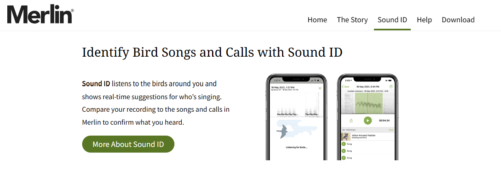
Light Data
- What is that other island near Japan?
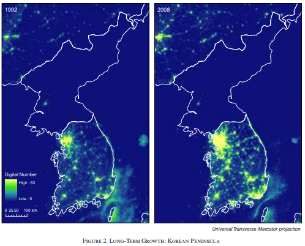
The AI Writer
McBroken
- The hero we need
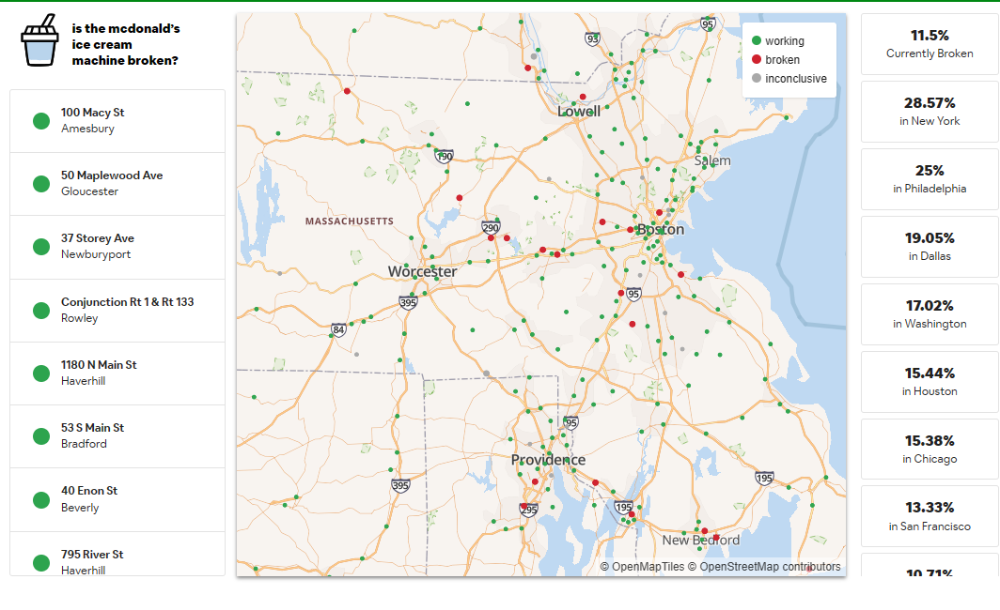
Better at Empathy?
- Never tired of helping
Recognizing Pain
- Doesn’t see race
- Conditional on severity, minorities more likely to be given opiates, whites more likely to be given knee replacements
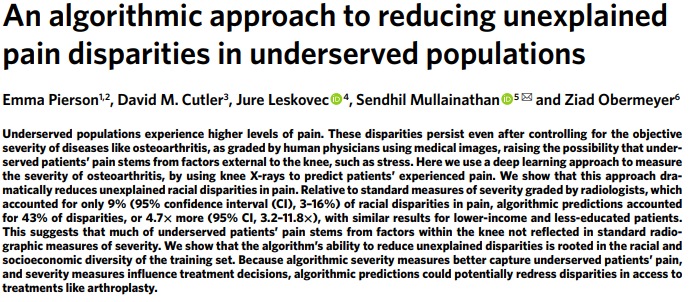
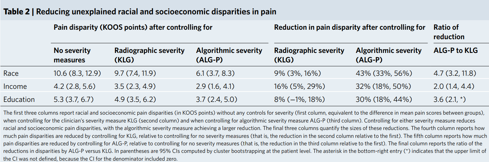
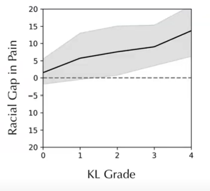
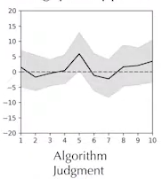
Under-Use of Health Care
- Whom should we test?
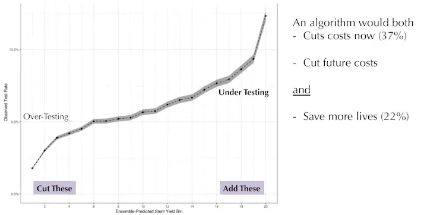
Preventing Crime
- Whom should we release?
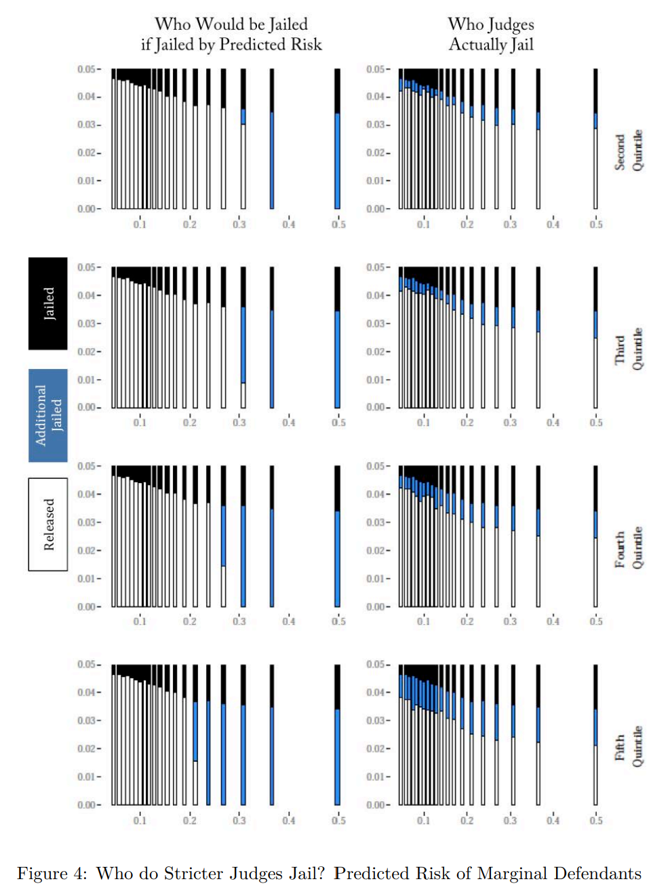
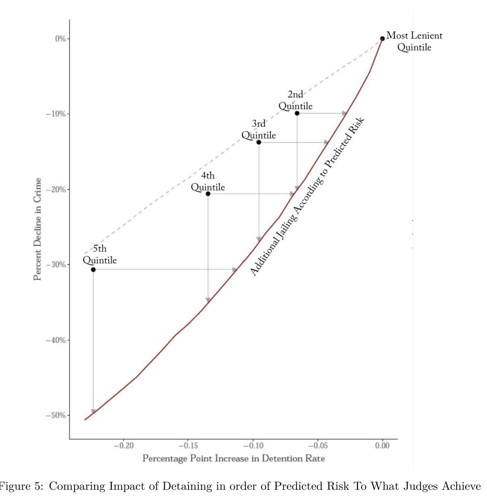
End of examples
What are the characteristics of an area/issue/environment where AI can make a meaningful impact?
Where can I find my own data?
Some general thoughts on generating data ideas
Offense vs Defense
- Think of idea generation as two sides: offense and defense
- Then alternate which side is in control for a few days at a time
The Botantist in the Jungle
- This is the reason I love economics and data science
- There are questions all around, and data is becoming more and more available on any topic
Beating Humans is Easier
- Don’t try to build an algorithm that will beat someone else’s algorithm
The Idea Muscle
- Market Power
- You need to come up with a bunch of bad ideas before you can get good at coming up with ideas
The Ghost Paper
- Write the paper before you have the results
- Write the title
- “This is the one thing that MOST people don’t know about the fast food industry”